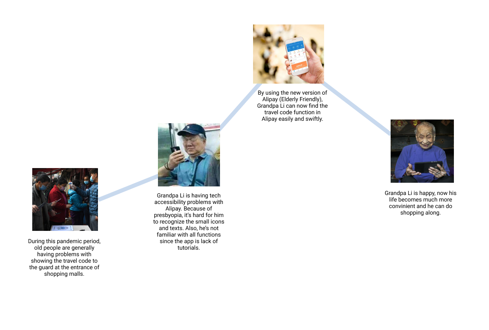
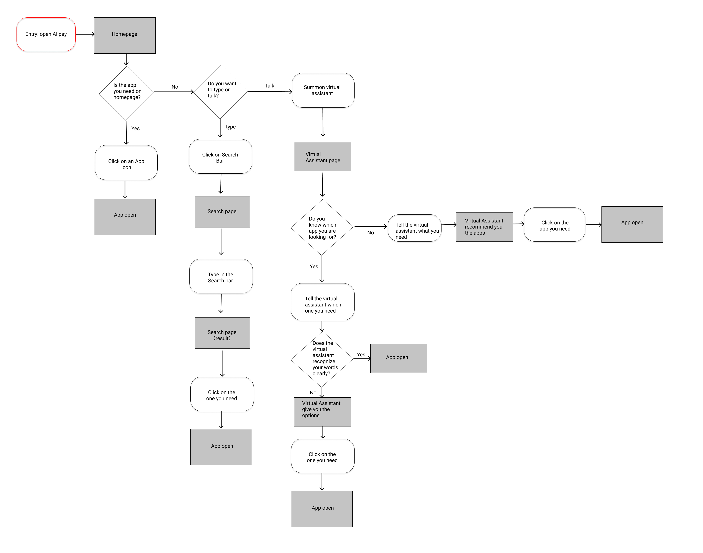

A growing problem
Alipay is the #1 payment solution in the largest country in the world. One area that users struggle with, however, is the app’s overflow of attention-grabbing and constantly changing secondary functions. The elderly, a huge market in China, especially grapple with this problem, leading to a high rate of user loss.
In order to help these elderly users of Alipay enjoy the same convenience and accessibility as everyone else, each user of Alipay needs to, first and foremost, use the payment feature easily. Additionally, to not just convert users of cash or WeChat Pay, Alipay’s secondary functions should be easier to access and customize, especially for these users who may have memory, sight, or hearing difficulties.
At a glance
UX Redesign
Tools
Sketch, Figma
Methods
Surveys, interviews, storyline building, prototyping
Taking action
How did I take down the barriers to entry and user retention for elderly users of Alipay? In this project, I specialized in planning and ideation. The members of my group and I were able to conduct research to inform the possible outcomes we imagined and then decided between. By following each step closely with the intended users, we were able to ensure that our completed product was the perfect solution to the problem.
Survey responses: Age

Researching seniors' pain points with Alipay
In order to quickly gather an abundance of useful information, my group conceived a list of questions to pick and pry at any and every problem we imagined our respondents might have with Alipay. Then, we condensed our list to be digestible in a short amount of time and split it into survey questions (mostly quantitative to facilitate high response rate) and interview questions (qualitative to ensure quality research results).
Survey responses: App usage

Applying research: User personas
Our initial research from surveys (as above) and interviews (not shown) allowed us to distill a few distinct personality types of elderly Alipay users. We formed these into four distinct user personas in order to make sure our product definitively solves their problems. We found distinctions in the types of secondary apps these users enjoy, as well as different amounts of seniority in terms of a wide range of years of Alipay usage.


Writing the users' stories
Keeping in mind all of the differences of the personas and what makes them unique, we designed a storyline to encapsulate how we want our solution to affect these users’ lives. By using a simple story we were able to leave room for each individual’s differences. Our app would be easy to customize, but always be user-driven — even AI automations are always asked for by the user.

Defining needs
In addition to envisioning the storyline our solution would have on the people we help, we also were able to map out all of the different needs we noticed users experiencing so we could either decide where to focus or how to include all of them. Noting and creating options was a very important part of our design process.
Ideating human solutions
After we defined our users’ needs, we began to draft a logical flow through actual solutions. We reimagined Alipay to have multiple simple, direct pathways to every task users need. To display these ideations of solutions created from users’ needs and pain points, we mapped their user flow and made a rough sitemap. Our revamped search, voice assistant, and navigation functions all seek to help the user.



Iterative testing
As we moved from low-fidelity to high-fidelity wireframes and a first finished prototype, we wanted to connect back with the users to verify its usefulness with them. As we gained more and more user-centered, human-centered feedback, our design also became more and more human, reaching back to the user as gently as possible when they reach to open the app. Re-emphasizing the basics like Alipay’s major draw—the payment function—were important here as well as fine-tuning the placement and flow of our chosen solutions.
Final prototype
Combining the elements of navigation and customization into an ultra-simple but rich interface was a tall order. We integrated these into an interface that was very accessible but still “Alipay.”
Team members:
Evan Bird, Rosie Gao, Emily Wang, Jennie Shi, Quristoff Jiang
Core tasks
Payment, Opening secondary applications
Solution avenues
Improved search, AI voice assistant, improved layout